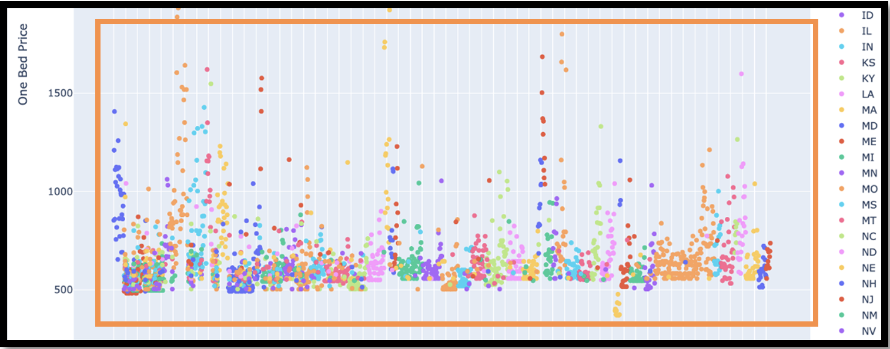
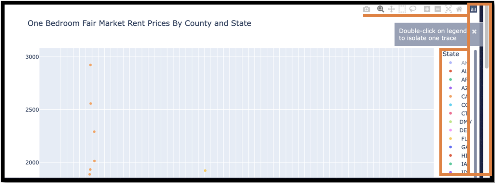
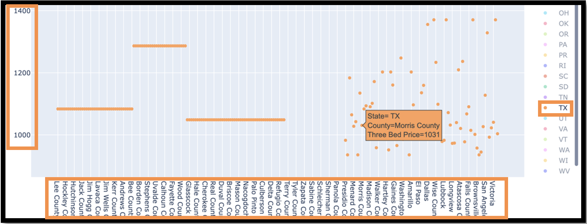
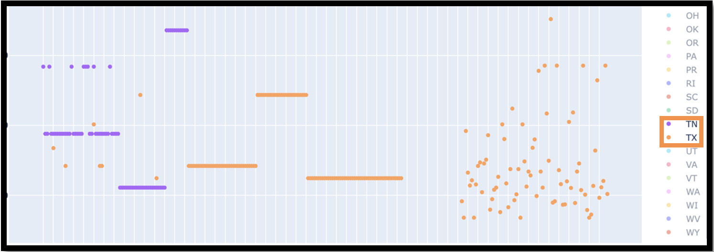

{% extends 'components/layout.html' %}

{% block title %}Rentalboard{% endblock title %}

{% block content %}

<div class="container px-4 py-5 text-light" id="icon-grid">
    
</div>

<div class="container">
    <header ul class="nav col-12 col-md-auto mb-2 justify-content-center">
        <li><a href="{{ url_for('auth.dashboard') }}" class="nav-link px-2 text-light" id="reitext">Rocket Dashboard</a></li>
        <li><a href="{{ url_for('fairmarketrent') }}" class="nav-link px-2 text-light" id="reitext">Fair Market Rent
                Data</a></li>
        <li><a href="{{ url_for('incexp') }}" class="nav-link px-2 text-light" id="reitext">Rental Property
                Calculator</a></li>
    </header>
</div>
<br>

<Fieldset>
    <h6 class="text-center" id="textinfo"> We recommend, BEFORE viewing our Fair
        Market Rent Data, that clients read the below documentation.
        This will teach you how to manipulate the data and prioritize your analysis.
    </h6>
</Fieldset>
<br>
<div class="container">
    <div class="row">
        <div class="col-lg-12">
            <div class="px-4 py-5 text-light">
                
            </div>
        </div>
    </div>

    <fieldset id="">
        <h6 class="renttext">What's Fair Market Rent (FMR)? FMR was established by the 
            U.S. Department of Housing and Urban Development (HUD). They have years of 
            annual surveys in analyzing standard rent payments to help those under the
            Section 8 program. Many will say FMR is a baseline rent as the market rate
            for rent flunctuates, however many investors and even apartment complexes 
            fail to rent at proper market rates. FMR is our ticket into analyzing areas
            and generating solid rental rates in markets across the country.
        </h6>
    </fieldset>
    

    <div class="row">
        <div class="col-lg-12">
            <div class="px-4 py-5 text-light">
                
            </div>
        </div>
    </div>

    <fieldset id="">
        <h6 class="renttext">Every plot graph defaults to showing results for all 50
            U.S. States.
        </h6>
    </fieldset>

    <div class="row">
        <div class="col-lg-12">
            <div class="px-4 py-5 text-light">
                
            </div>
        </div>
    </div>

    <fieldset id="">
        <h6 class="renttext">Each graph has a title for context, hover in the top right to 
            access your graph's tools, use the two sidebars to move up/down, and *quickly* 
            double click a state's digraph (two letter abberviation) to only display that 
            state's results.
        </h6>
    </fieldset>

    <div class="row">
        <div class="col-lg-12">
            <div class="px-4 py-5 text-light">
                
            </div>
        </div>
    </div>


    <fieldset id="">
        <h6 class="renttext">Your results should now display one state, (TX) in this example,
            in a single color. Hover over a result to view the State, County, and recommended
            Fair Market Rent (in $U.S. Dollars). The Y-Axis provides a summary view of the
            Rent Cost, and the X-Axis holds the list of a State's County Names. When looking
            at a specific County's results, follow the white line it is attached to.
            
        </h6>
    </fieldset>

    <div class="row">
        <div class="col-lg-12">
            <div class="px-4 py-5 text-light">
                
            </div>
        </div>
    </div>
</div>
<br>

<fieldset id="">
    <h6 class="renttext">After having one State selecting you can single click another
        State's digraph to show the State-filtered results of your choice. In order to
        cancel out the view of these two states, in this example TN and TX, we would have
        to click on TN once, then double click again on TX for the chart to revert back to
        results of all 50 states.
    </h6>
</fieldset>

<br class="py-5">

<div class="container">
    <div class="row">
        <div class="col-lg-12">
            
        </div>
    </div>

    <footer class="">
        <ul class="nav justify-content-center">
            <li class="nav-item" id="ftext"><a href="{{ url_for('auth.dashboard') }}"
                    class="nav-link px-2 text-light">Rocket Dashboard</a>
            </li>
            <li class="nav-item" id="ftext"><a href="{{ url_for('auth.profile') }}"
                    class="nav-link px-2 text-light">My Profile</a>
            </li>
            <li class="nav-item" id="ftext"><a href="{{ url_for('fairmarketrent') }}"
                    class="nav-link px-2 text-light">Fair Market Rent
                    Data</a>
            </li>
            <li class="nav-item" id="ftext"><a href="{{ url_for('incexp') }}"
                class="nav-link px-2 text-light">Rental Property
                Calculator</a>
            </li>
           
        </ul>
        <p class="container justify-content-center col-lg-10 fs-4 px-2" id="reitext">Created by <a
                href="https://www.linkedin.com/in/ethannakamura/" id="reitext">@ethannakamura</a>
    </footer>

</div>

{% endblock content %}